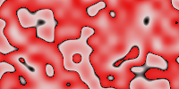

Method Image.Image()->turbulence()
- Method turbulence
voidarray(float|int|array(int))colorrange)
voidarray(float|int|array(int))colorrange,intoctaves,floatscale,floatxdiff,floatydiff,floatcscale)- Description
-
gives a new image with the old image's size, filled width a 'turbulence' pattern
The random seed may be different with each instance of pike.
Example:
->turbulence( ({0,({229,204,204}), 0.9,({229,20,20}), 0.9,Color.black}) );
 - Parameter
colorrange -
colorrange table
- Parameter
octaves -
default value is 3
- Parameter
scale -
default value is 0.1
- Parameter
xdiff - Parameter
ydiff -
default value is 0,0
- Parameter
cscale -
default value is 1
- See also